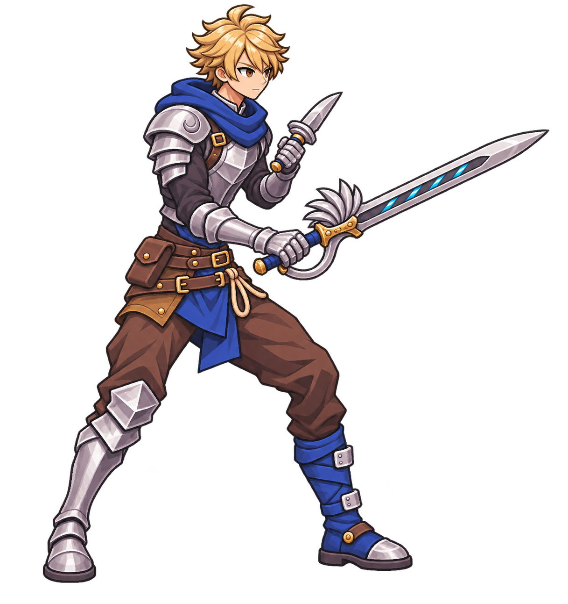

같은 오른쪽 앞3/4 전투준비 · 게임별 비율 변경 허용 · 실제 전투 자료에서 표현 원리 적용
아래 A/B의 비율 고정 실험이 아니다. 위 신규10안은 게임별 비율을 적용했다.

57/72CSSpx는 이 갤러리 표시 크기다. 실게임 통합·실기기 검증·네이티브 스프라이트 납품과 구분한다. 생성원본은 크기/알파/바이트를 보존한다. 공식 게임 그림을 복제한 캐릭터나 사용자 최종 선택본을 뜻하지 않는다.
 A · SD 원형
A · SD 원형